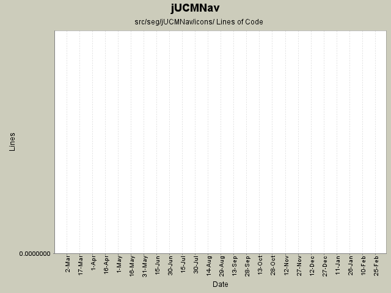

Summary Period: 2005-02-22 to 2006-03-02

Total Lines Of Code:
0 (2006-03-31 18:01)
| Author | Changes | Lines of Code | Lines per Change |
|---|---|---|---|
| Totals | 155 (100.0%) | 0 (-) | 0.0 |
| oclift | 22 (14.2%) | 0 (-) | 0.0 |
| jpdaigle | 6 (3.9%) | 0 (-) | 0.0 |
| jmcmanus | 2 (1.3%) | 0 (-) | 0.0 |
| jkealey | 10 (6.5%) | 0 (-) | 0.0 |
| jfroy | 74 (47.7%) | 0 (-) | 0.0 |
| etremblay | 41 (26.5%) | 0 (-) | 0.0 |
Fix the URNlink to support multiple links type. Modification of the links display in UCM
0 lines of code changed in:
Added feedback in UCM for URNlinks
0 lines of code changed in:
Name change for EvaluationScenario (now called Strategy)
0 lines of code changed in:
Added actor evaluation level.
Fixed bug when entering non integer for evaluation level
0 lines of code changed in:
Added evaluation labels in evaluation scenario view.
0 lines of code changed in:
Evaluation scenario view added.
0 lines of code changed in:
Merge of GRL branch with the main trunk
0 lines of code changed in:
Merge grl branch with the main trunk
Major modification of the metamodel (URN_08.mdl) (Added GRL metamodel, New interfaces that define common element in GRL and UCM, Modified UCM-Map package to implement the new interfaces (some associations and attributes have been refactored using the interfaces), Map is now called UCMmap (to resolve conflict with java.util.map in the implementation), Removed Path Graph)
Modification of the code that used the metamodel.
Started modification of jUCMNav to support GRL.
0 lines of code changed in:
added graphical overview in outline; according to my tests, it should be okay but needs to be tested more extensively
0 lines of code changed in:
bug 195 - 196 - 183: actors, started implementing waiting place and timer. (currently simple path nodes)
0 lines of code changed in:
Integrate Steve Hutchison's excellent new logo image as small icons (no text).
0 lines of code changed in:
Icons v2 - look a little choppy, maybe we should round them out in the lower-right corner.
0 lines of code changed in:
Actions now have icons in menus. The icon will change for transmogrify depending if you change to OR or AND...
The StubBindingsDialog is now much more like I want it to look like. The commands seems to work and the undo redo buttons in the dialog are working. I'll find an other image for the disabled undo/redo.
0 lines of code changed in:
jpd's new icons, copied elsewhere.
0 lines of code changed in:
- Can now double click on static stub to open the associated map.
- To change the associated map of a static stub, select a stub and select a map from the list in the Connect Map section of the Stub Bindings view.
- This view is far from finished. It's more a prototype right now that will evolve to a final version. Eclipse Forms layouts are really not fun. The view currently only work for static stubs. The actions done when you add a plugin is not a command, so use the view at your own risk right now...
- New icons for dynamic stubs, path tool 24, bindings.
0 lines of code changed in:
Stubs no longer rotate, andforks now rotate (anchors ned to be set up with connection router to prevent overlapping of figure with splines).
Added DirectionArrow, andforks
0 lines of code changed in:
Added a new icon for the path tool and changed it's place in the palette.
0 lines of code changed in:
24x24 Icons
0 lines of code changed in:
bug 238; new attempt at fixing images. 98% sure I found the bug.
0 lines of code changed in:
added icon on map in outline.
0 lines of code changed in:
(3 more)
Generated by StatCVS 0.2.4